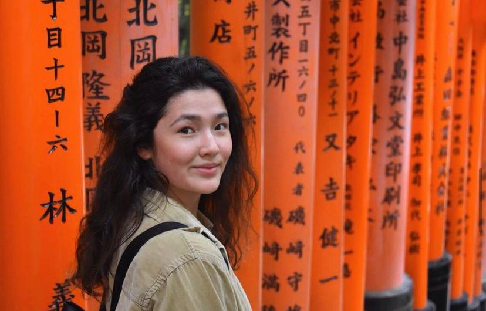
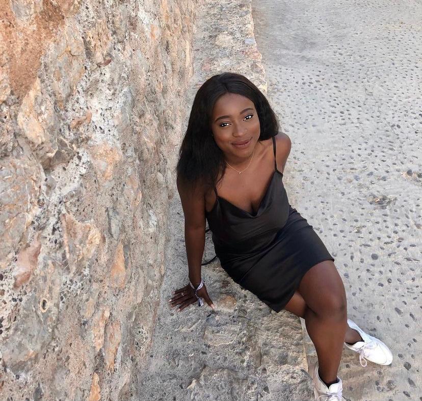

Meet Ilaria Obata

I am Ilaria, an art historian, curator and researcher based in Amsterdam. My academic and professional research is primarily focused around BIPoC artists, cultural theory, and material culture studies. I am driven to centre women of colour both in my curatorial and written work, seeing as I want to decentre heteronormative voices and socio-cultural tropes. I’m interested in exploring the global and local permeances of history; creating space for discussion and institutional change.
Meet Chairene Chidozie

I am Chairene, a web developer based in The Hague. As someone grateful to be influenced both by my parent’s West-African culture and the Dutch and Singaporean culture I was raised in, I aim to always create intersectional conversations that include a wide range of voices. Raising awareness of racial injustice is highly important to me, and I actively try to participate in dialogues with cross-cultural perspectives. A tagline to summarise myself would be, “I aim to provoke the system, not my emotional balance”.